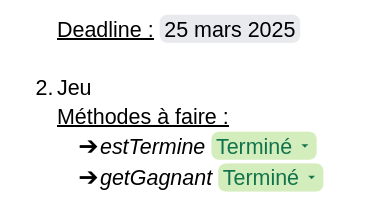

SAE 2.01 : Pokemon TCG
Contexte : Pokemon, une des franchises de jeux-vidéos les plus populaires à ce jour.
Nous avons pu nous familiariser avec le langage JavaFX, un langage de développement d'interfaces d'applications en Java,
mais aussi expérimenter et tester nos compétences en développement orienté objet, en recréant le jeu Pokemon TCG,
un jeu de cartes et de batailles de pokemon en tour-par-tour.
Vous pourrez trouver dans la galerie une capture d'écran de notre outil de suivi de projets sur lequel nous avons travaillé.
À propos
J'ai pu, à travers ce projet, me familiariser avec les compétences suivantes :
- Le développement orienté objets
- Le langage java et javaFX
- Le versionnage de codes (grâce à GitLab)
- Le Test Driver Development
Galerie & Rendu
